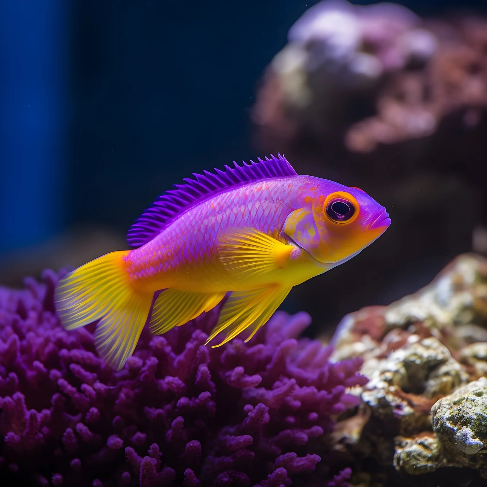
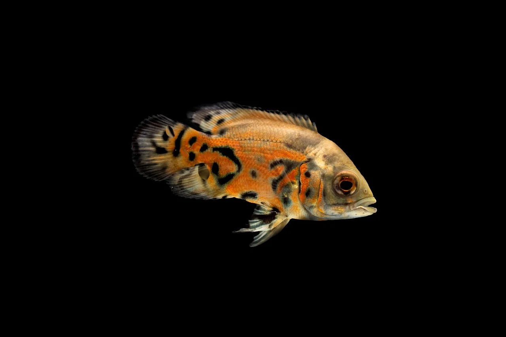
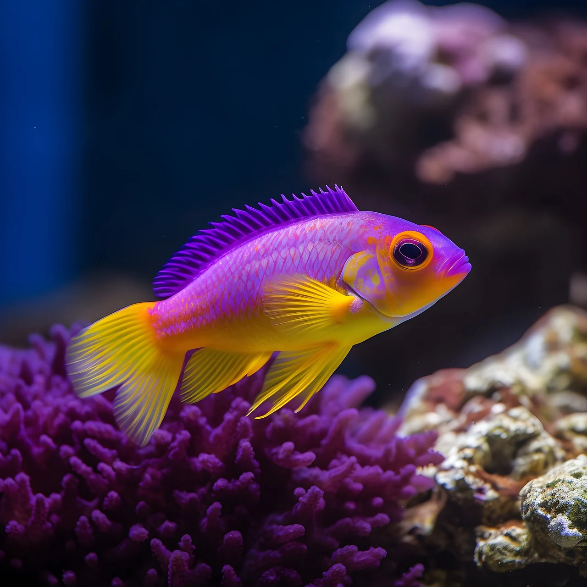
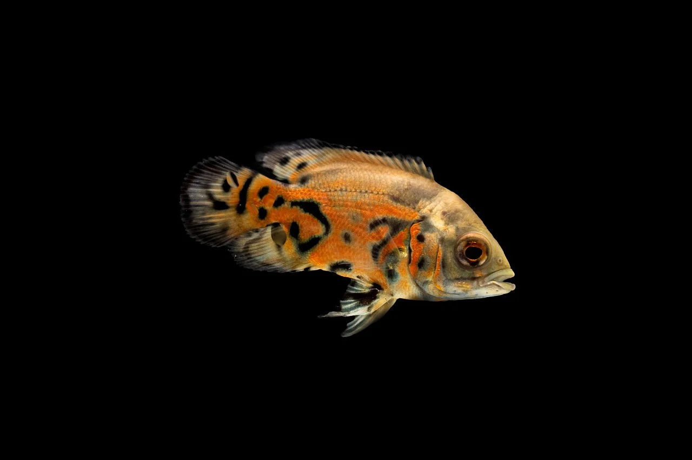
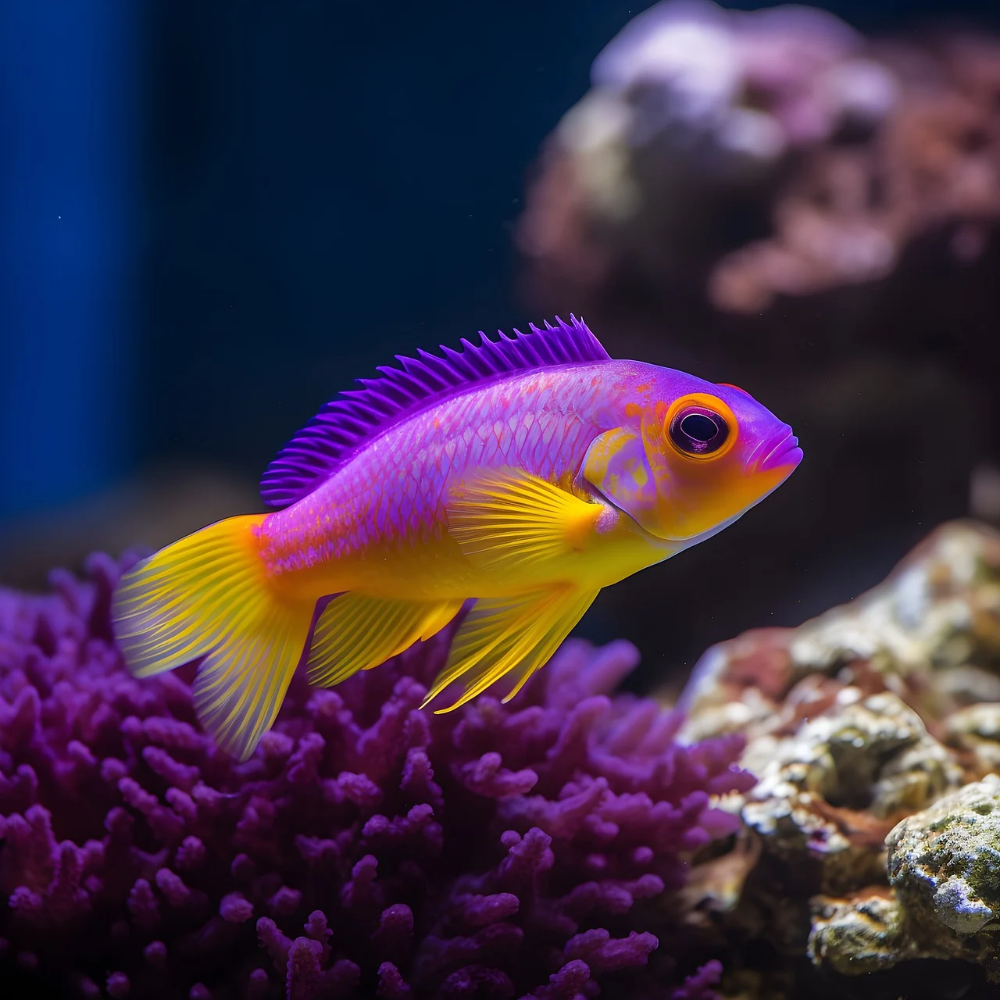
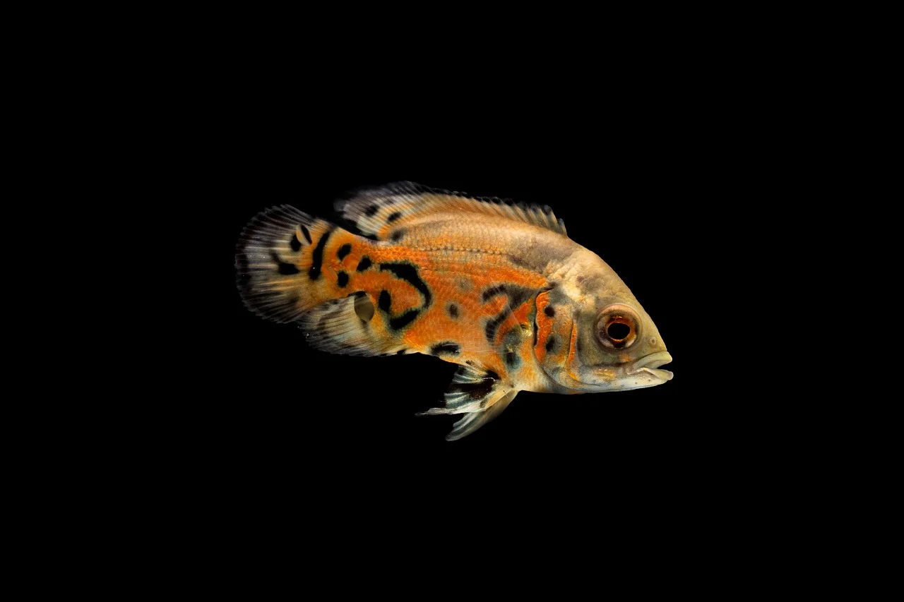

Fish
Food Images
Aquarium
Fish Images
Contact
Favourite Foods
Ice Cream
French Fries
Burger
Chocolates
Taste Of Foods
Quality of Food(100%)
Spices in the Food(60%)
Appearance of the Food(35%)
More About Fishes and Foods
Fishes & Foods
I love fishes. I grew up in my village and I used to grow many types of fishes in home.
 
 


